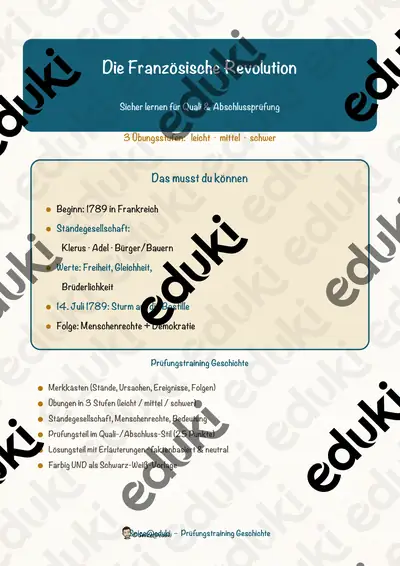

Lesespur: Die Französische Revolution – Lesespurgeschichte mit Rätseln (Klasse 8)
Begib dich mit deiner Klasse auf eine spannende Lesespur durch die Französische Revolution! Die Kinder begleiten Lena und Jonas und das Pariser Mädchen Sophie durch eine Stadt im Jahr 1789 – vom Schloss Versailles über die Generalstände- und Nationalversammlung, den Marktplatz und die Bastille bis zum Steueramt, der Druckerei und dem Fest der Republik – und verstehen dabei ganz nebenbei, warum es zur Revolution kam und wie aus Untertanen freie Bürger wurden. Am Ende jedes Abschnitts verrät ein Hinweis den nächsten Ort auf dem Stadtplan – nur wer richtig liest und mitdenkt, findet den Weg und sammelt alle geheimen Buchstaben zum Lösungswort.
Diese Lesespurgeschichte verbindet motivierendes, sinnentnehmendes Lesen mit echtem Sachwissen zur Französischen Revolution und schult zugleich das genaue Arbeiten. Das Material ist SOFORT EINSETZBAR und in DREI DIFFERENZIERUNGSSTUFEN (leicht ★ / mittel ★★ / schwer ★★★) angelegt, sodass alle Kinder einer Klasse am selben Thema arbeiten können.WICHTIG: Das komplette Material ist sowohl in FARBE als auch in SCHWARZ-WEISS enthalten – ideal zum Sparen von Druckkosten.DAS IST ENTHALTEN
- Lesespurgeschichte in 3 Niveaus (leicht, mittel, schwer)
- farbiger Stadtplan als Suchkarte
- Hörverstehen mit QR-Code zur MP3 (Kinder hören selbstständig mit Kopfhörern)
- vier Aufträge auf dem Weg: ein Verbinde-Rätsel, ein Sach-Quiz, eine Prozent-Rechenaufgabe und ein Steckbrief
- Rätselseite (Wörter-Suchsel + Wissensfragen)
- Ausmalbild zum Thema (Fest der Republik)
- ausführliches Lösungsblatt für die Lehrkraft
- alles zusätzlich als komplette Schwarz-Weiß-VarianteSO FUNKTIONIERT DIE LESESPURDie Kinder lesen ab START, entnehmen dem Text einen Hinweis auf einen Ort, suchen ihn auf dem Plan und lesen beim dort abgebildeten Buchstaben weiter. Eingebaute Sackgassen dienen der Selbstkontrolle. Am Ende werden die gesammelten Buchstaben umgestellt und ergeben ein geheimes Lösungswort. (Die Lösungen sind selbstverständlich nur im Lösungsblatt für die Lehrkraft enthalten.)INHALTLICHER SCHWERPUNKTDie Französische Revolution ab 1789: die Ständegesellschaft und ihre Ungleichheit, die Ursachen der Revolution (Verschuldung, hohe Steuern nur für den dritten Stand, Hunger, fehlende Mitbestimmung), die Generalstände und die Nationalversammlung, der Sturm auf die Bastille am 14. Juli 1789, die Erklärung der Menschen- und Bürgerrechte sowie der Weg zur Republik mit dem Leitgedanken „Freiheit, Gleichheit, Brüderlichkeit". Das Material stellt Ursachen und Verlauf sachlich und faktenbasiert dar, ohne Gewaltdarstellung und ohne zu werten.ABGEDECKTER LEHRPLAN (Klasse 8)
- Geschichte / Gesellschaftswissenschaften (GSE, Mittelschule; anschlussfähig an GPG/Geschichte in Realschule und Gymnasium): die Französische Revolution – Ständegesellschaft, Ursachen, Generalstände und Nationalversammlung, Sturm auf die Bastille, Menschen- und Bürgerrechte, Weg zur Republik; sachliche, mehrperspektivische Betrachtung.
- Deutsch – Lesen mit Texten und Medien umgehen: Lesestrategien anwenden, Texten gezielt Informationen entnehmen, sinnentnehmend und selektiv lesen, Schlüsselwörter nutzen; Selbstkontrolle und Lesemotivation durch die Lesespur; Zuhören: einem Sachhörtext konzentriert folgen und Wesentliches entnehmen (Hörverstehen mit MP3).
- Mathematik – Prozentrechnung im Sachzusammenhang (Abgaben, Steuern), Prozentwert berechnen und Ergebnisse deuten.
- Fächerübergreifend / Kompetenzen: selbstständiges Arbeiten, genaues Lesen und Prüfen, Konzentration und Ausdauer, kreatives Gestalten (Ausmalbild).
Geeignet für Freiarbeit, Stationenlernen, Vertretungsstunden, Wochenplan und Homeschooling. Klassenstufe 8 (differenziert einsetzbar auch in angrenzenden Jahrgangsstufen).
Ähnliche Materialien

Französische Revolution Lückentext mit Wortspeicher Hörverstehen und Suchsel

Die Französische Revolution – Prüfungstraining Geschichte (Klasse 8)

Revolution Lückentext mit Wortspeicher Hörverstehen und Suchsel

Schloss Versailles Lückentext mit Wortspeicher Hörverstehen und Suchsel

03-20 Tag der französischen Sprache

Jahrhundert Lückentext mit Wortspeicher Hörverstehen und Suchsel

Französische Sprache Lückentext mit Wortspeicher Hörverstehen und Suchsel